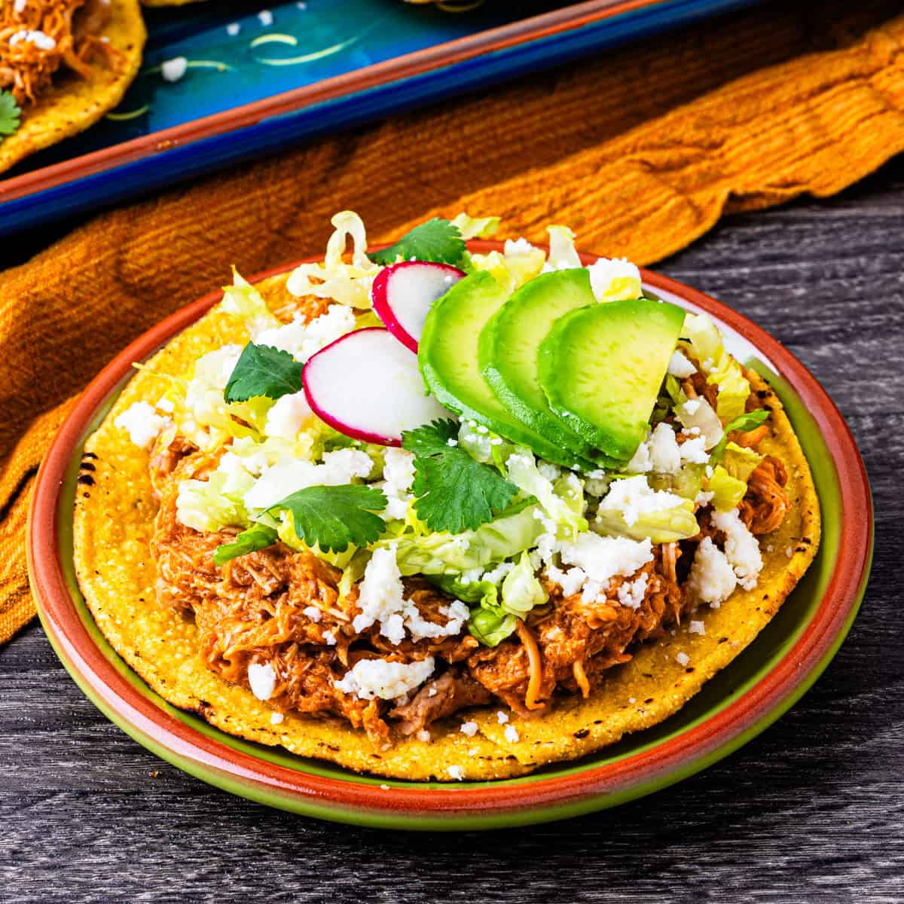

Home
Tinga

Description
Tinga is Mexican dish featuring shredded chicken in a flavorful,
smoky sauce made from tomatoes, onions, garlic, and chipotle peppers in adobo.
It's often served on tostadas with toppings like avocado,
crema, and cheese, but can also be used as a filling for tacos, sopes, or empanadas.
Ingredients
- 2 chicken breasts (thighs for more flavor)
- 3-4 ripe tomatoes
- 1 can chipotle peppers
- 1/2 white oniion
- 1 garlic clove
- 1 bay leaf
- Dried oregano
- Chicken broth or water used to cook the chicken
Optional toppings
- Tostadas
- Sour cream
- Queso fresco
- Shredded lettuce
- Avocado
Steps
Cook the chicken
- Place the chicken in a pot with water, a bit of salt, and the bay leaf.
- Bring to a boil, then simmer for 15-20 minutes until fully cooked.
- Remove the chicken, let it cool slightly, then shred it.
Prepare the sauce
- In a blender, add
- Tomatoes
- Chipotle peppers
- Garlic
- A pinch of salt and pepper
- Blend until smooth.
Cook the onion
- Heat a little oil in a pan over medium heat.
- Add the sliced onion and cook until soft and slightly caramelized.
Cook the sauce
- Pour the blended sauce into the pan with onions.
- Cook for 8-10 minutes, stirring ocassionally, until it darkens and thickens.
- Add oregano.
Combine
- Add the shredded chicken to the sauce.
- Pour in a little of the chicken broth.
- Mix wll and simmer for 5-10 minutes so the flavors come together.
Taste & serve
- Asjust salt and spice if needed
- Serve on tostadas, tacos, or tortas, and top with cream, cheese, lettuce, and avocado